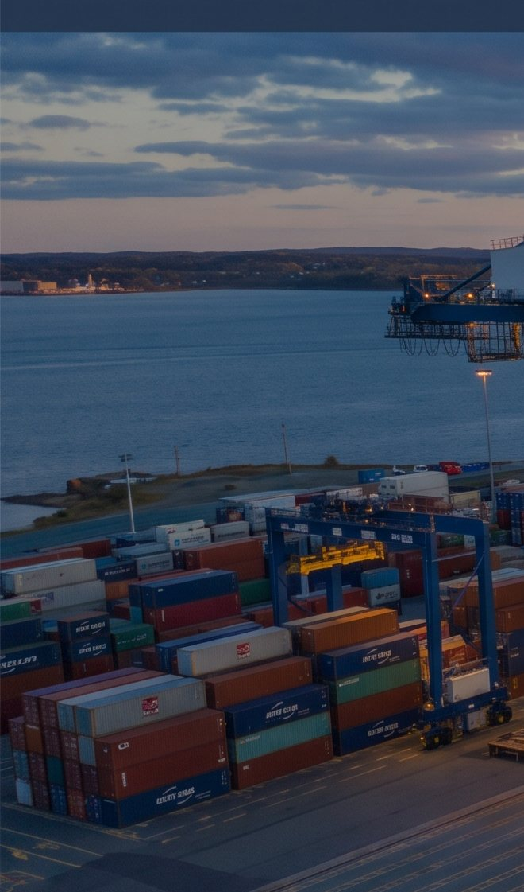

Halifax, Nova Scotia
CAHALThe closest North American port to Europe, which is why transatlantic strings use it as first port inbound and last port outbound. It is ice free in every month of the year, and rail runs directly off the dock.
- Terminal
- Fairview Cove
- Operator
- PSA Halifax
- Depth alongside
- 16.8 m minimum
- Berth
- 2,297 ft over 70 acres
- Cranes
- Four, three super post-panamax
- On-dock rail
- 11,000 ft, double stack
PSA International acquired the terminal in March 2022. Electric rail-mounted gantry cranes recently commissioned there are expected to take up to 75 per cent of port-generated truck traffic off city roads.